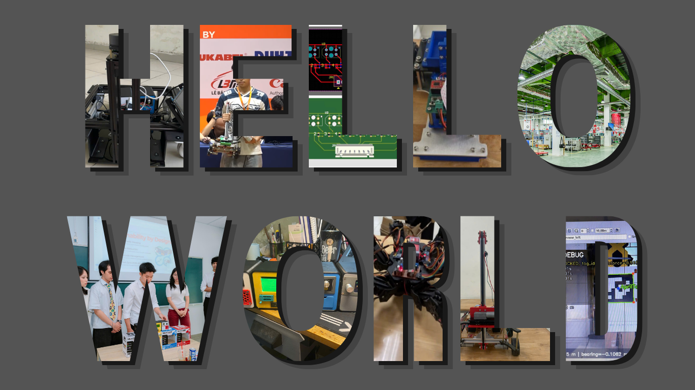

MECHATRONICS / ROBOTICS / INTEGRATION
Le Huy Hung.
Mechatronics & Robotics Engineer
A BK-er who loves robotics and building things that work. I connect mechanical design, embedded electronics, and software to turn ideas into working robotic systems.